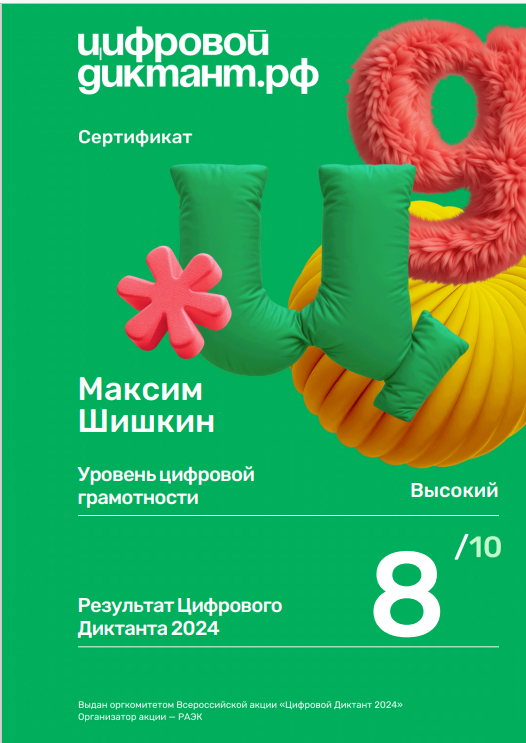

Достижения
Технологический диктант

Прошел диктант на смекалку, 4 блока по 25 вопросов
Цифровой диктант
Цифровой Диктант — Всероссийская акция, признанная самой масштабной в России проверкой знаний в области цифровой грамотности. Акция дает возможность пользователям не только узнать свой уровень цифровых компетенций, но и пройти работу над ошибками, а также сформировать свою личную стратегию развития недостающих знаний и навыков. Диктант состоит из тестирований, разработанных с учетом разных возрастных категорий: для детей (10-13 лет), подростков (14-17 лет), взрослых (18-59 лет) и людей старшего возраста (60 лет и старше).
Достижение 3
Описание проекта 3.